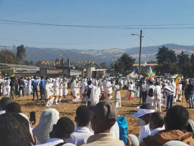
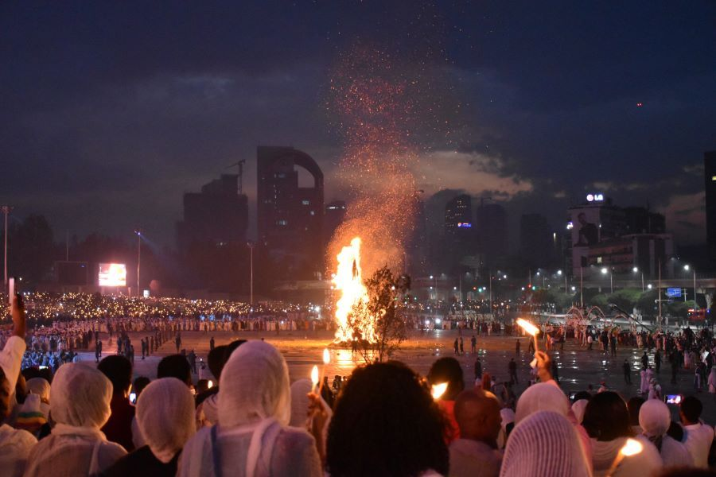
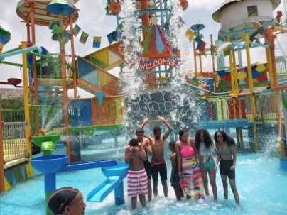
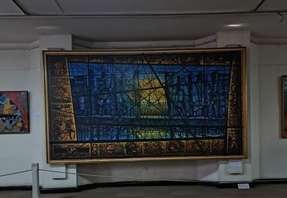
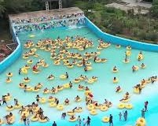
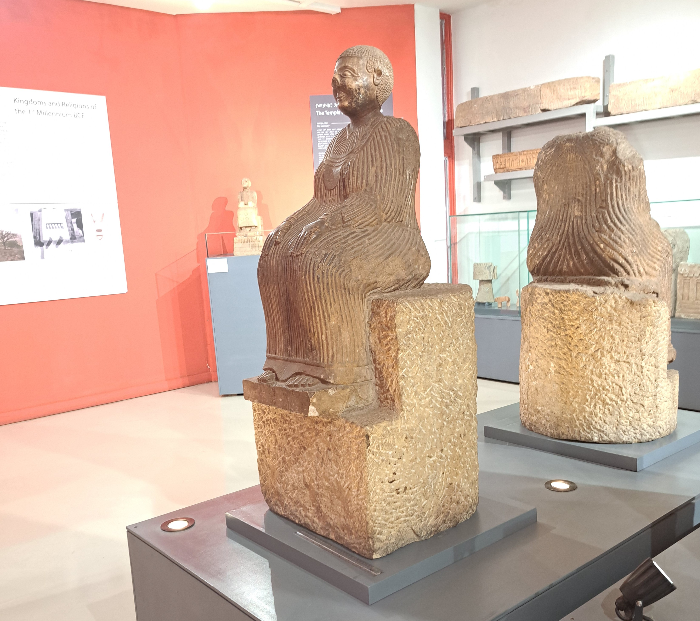

Timket is more than just a celebration—it's a cultural and spiritual
adventure that immerses you in the heart of Ethiopia’s traditions.
It's the only time that i have seen this thousands of people gather
to celebrate as one heart. Whether you’re drawn to its religious
significance, the vibrant processions, or the opportunity to connect
with locals, Timket offers an unforgettable experience

As I stood in the heart of Meskel Square in Addis Ababa, surrounded
by a sea of white-clad people, I felt the energy of the moment
ripple through me. The rhythmic beat of drums and the chant of
prayers filled the air, blending with the hum of excitement from the
crowd. When the flames roared to life, sparks shot into the sky like
shooting stars, and I couldn’t help but gasp in awe. Meskel wasn’t
just something I experienced; it felt like something I became part
of.

It was a sunny day when my parents decided to take our family to
kuriftu water park, Located in Bishoftu, just a short drive from
Addis Ababa.though we didn't know at the time. I was not that
interested at first but we still went their and it turns out to be
one of the best times of my life.

Gallary

Museam Art

A water wave at kuriftu

A sitting sculputre at national museumcelebration of Timket